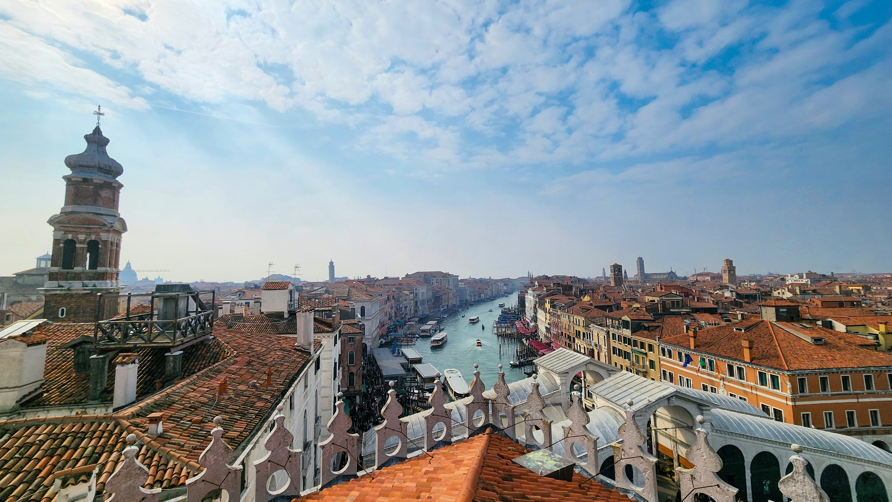

סדנאות צילום בנייד בקרנבל ונציה 2026
מסיכות, גונדולות, ערפל ותעלות – הקרנבל של ונציה הוא הבמה המושלמת לצילום. בסדנאות הקצרות והאישיות נלמד יחד איך לתפוס את הקסם הזה בנייד, בלי להעמיס ציוד ובלי להילחץ מהמוני האנשים.

מסיכות, גונדולות, ערפל ותעלות – הקרנבל של ונציה הוא הבמה המושלמת לצילום. בסדנאות הקצרות והאישיות נלמד יחד איך לתפוס את הקסם הזה בנייד, בלי להעמיס ציוד ובלי להילחץ מהמוני האנשים.
הקרנבל הוא אחד האירועים הכי עמוסים ומוכרזים בעיר – וזה בדיוק מה שהופך אותו לגן‑עדן לצלמים. המסיכות מחכות שיצלמו אותן, האור משתנה כל הזמן, והכל קורה על רקע תעלות וגשרים.
הסדנאות צילום בנייד קצרות ומדויקות: אורכן כשעתיים לכל סיור, בקבוצה קטנה, כדי לשמור על יחס אישי ולצלם בנחת גם כשסביבנו אלפי מבקרים. אין תיאוריה מיותרת – רק מה שעוזר לכם לצאת עם תמונות שמרגיש לכם "וואו".
הסדנאות מתוכננות לפי הזמנים והאווירה של הקרנבל עצמו, כך שתקבלו גם חוויה וגם הזדמנויות צילום מצוינות.
בכל סדנה ניפגש במקום מוגדר מראש, נכיר בקצרה ונכוון את המצלמות בניידים. משם נצא יחד לאורך מסלול קצר וברור, שעובר דרך נקודות צילום עם רקעים חזקים ואור נעים – בלי להיתקע בצווארי בקבוק מיותרים.
לאורך הדרך תקבלו משימות צילום דרך קבוצת וואטסאפ ייעודית (חובה להיות עם אינטרנט זמין) נעצור ליד מקומות מיוחדים ומסיכות שמוכנות להצטלם, נמצא זוויות שקטות יותר ליד תעלות וגשרים, נדבר על קומפוזיציה ואור, ונתרגל צילום פורטרטים, אווירה ותנועה. בכל תחנה תקבלו משוב כדי שתדעו בדיוק מה לשפר בצילום הבא.
מי שכבר מצלם בטיולים אבל מרגיש שהתמונות לא משקפות את החוויה. נשים וגברים שרוצים "לשדרג" את צילום הנייד בלי להחזיק מצלמה כבדה.
מטיילים שמגיעים לקרנבל ורוצים לחזור עם אלבום תמונות מרגש, משפחות שרוצות לצלם את הילדים על רקע המסיכות, בלי תמונות משעממות ומטושטשות.
מי שרוצה להשתמש בקרנבל כדי ליצור תוכן חזותי מיוחד לרשתות, עם דגש על סיפור, קומפוזיציה ותכנון צילומים מראש. ניתן לקבוע מראש סדנא 1:1 כדי לשים דגש על הצילום המתאים לעסק
הנה כמה סוגי צילומים שתתנסו בהם במהלך הסדנאות – כולם עם הנייד שלכם בלבד.
יצירת קשר קצר עם המצולם, בחירת רקע נקי וזווית מחמיאה – כך שהמסיכה תקבל את מלוא הבמה.
צילום הגשרים, התעלות והערפל של בוקר מוקדם – כדי להרגיש את ונציה גם אחרי שחוזרים הביתה.
בתים צבעוניים, השתקפויות במים ופרטים קטנים – איך לא ללכת לאיבוד בכל הצבעים.
כמה נקודות שיעזרו לכם לצלם חכם ובכבוד לעיר ולתושבים – גם אם אתם רק מטיילים חובבי צילום.
"השתתפתי בהדרכת צילום בונציה עם אסתי וזו הייתה חוויה מפתיעה ומעשירה במיוחד. הבחירה בשעה מוקדמת התבררה כקריטית: העיר עדיין ריקה יחסית, האור רך ונרי והתחפושות חקבלות עומק ואופי שלא קיין בהמשך היום כשהמוני תיירים מציפים את הסמטאות" מיכאל
"בהדרכה התמקדנו בעקרונות החשובים באמת בצילום בטלפון. קומפוזיציה, ניצול אור טבעי, זויות צילום ופנורמה" שרה
"תודה רבה על סדנא מיוחדת ברחובות ונציה. למדתי לעבוד עם האור ולחפש פרטים בדמויות המחופשות מולי" קרן